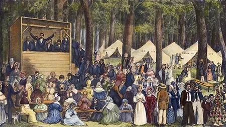

Overview
This website explores two major religious movements in early American history: the Second Great Awakening and Unitarianism. It also explains how they influenced each other and led to major reforms.
Main Idea
These movements shaped how Americans thought about religion, morality, and society.
